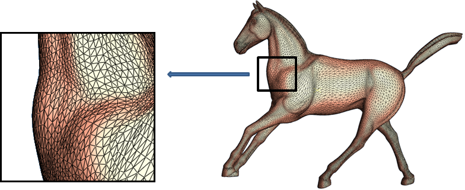
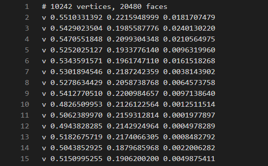
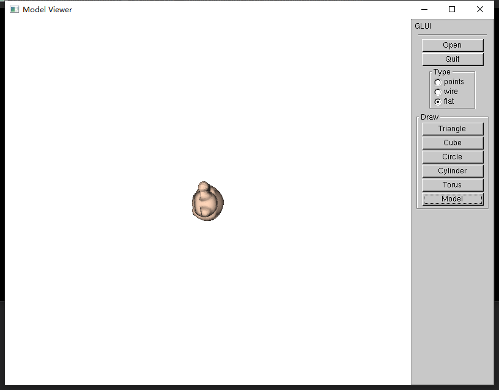
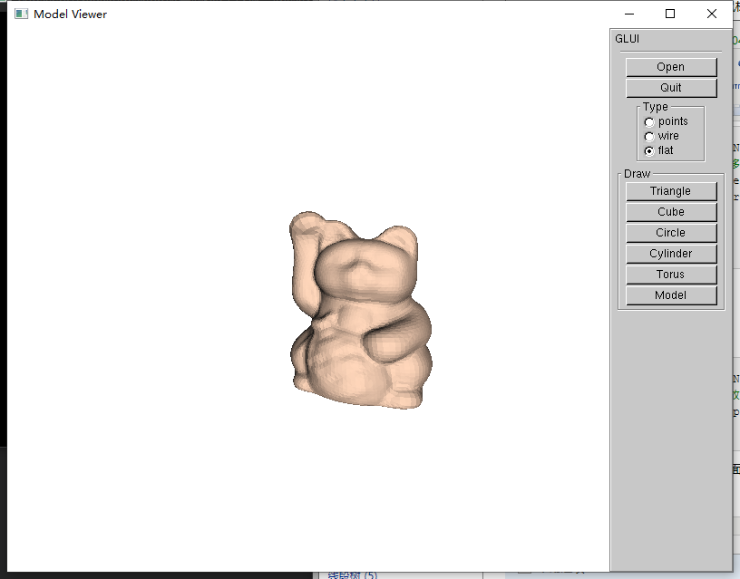

在上篇文章中，介绍了基本图形的绘制。这篇博客中将介绍模型的加载、绘制以及鼠标交互的实现。
要实现模型的读取、绘制，我们首先需要知道模型是如何存储在文件中的。
通常模型是由网格组成的，且一般为三角网格。原因为：

可采用地数据结构包括：
在这里，我使用的是面列表。
先定义头文件
#ifndef OBJ_CLASS
#define OBJ_CLASS
#include <vector>
#include <cmath>
struct Vector3;
Vector3 operator + (const Vector3& one, const Vector3& two);
Vector3 operator - (const Vector3& one, const Vector3& two);
Vector3 operator * (const Vector3& one, double scale);
Vector3 operator / (const Vector3& one, double scale);
Vector3 Cross(Vector3& one, Vector3& two);
struct Vector3
{
double fX;
double fY;
double fZ;
Vector3(double x = 0.0, double y = 0.0, double z = 0.0) : fX(x), fY(y), fZ(z) {}
Vector3 operator +=(const Vector3& v) { return *this = *this + v; }
double Length() { return sqrt(fX * fX + fY * fY + fZ * fZ); }
void Normalize()//归一化
{
double fLen = Length();
if (fLen == 0.0f)
fLen = 1.0f;
if (fabs(fLen) > 1e-6)
{
fX /= fLen;
fY /= fLen;
fZ /= fLen;
}
}
};
struct Point
{
Vector3 pos;
Vector3 normal;
};
struct Face
{
int pts[3];
Vector3 normal;
};
class CObj
{
public:
CObj(void);
~CObj(void);
std::vector<Point> m_pts; //顶点
std::vector<Face> m_faces;//面
public:
bool ReadObjFile(const char* pcszFileName);//读入模型文件
private:
void UnifyModel();//单位化模型
void ComputeFaceNormal(Face& f);//计算面的法线
};
#endif然后是一些简单的运算符重载以及向量计算
#include "Obj.h"
#include <iostream>
#include <sstream>
#include <algorithm>
using std::min;
using std::max;
Vector3 operator + (const Vector3& one, const Vector3& two) //两个向量相加
{
return Vector3(one.fX + two.fX, one.fY + two.fY, one.fZ + two.fZ);
}
Vector3 operator - (const Vector3& one, const Vector3& two) //两个向量相减
{
return Vector3(one.fX - two.fX, one.fY - two.fY, one.fZ - two.fZ);
}
Vector3 operator * (const Vector3& one, double scale) //向量与数的乘操作
{
return Vector3(one.fX * scale, one.fY * scale, one.fZ * scale);
}
Vector3 operator / (const Vector3& one, double scale) //向量与数的除操作
{
return one * (1.0 / scale);
}
Vector3 Cross(Vector3& one, Vector3& two)
{//计算两个向量的叉积
Vector3 vCross;
vCross.fX = ((one.fY * two.fZ) - (one.fZ * two.fY));
vCross.fY = ((one.fZ * two.fX) - (one.fX * two.fZ));
vCross.fZ = ((one.fX * two.fY) - (one.fY * two.fX));
return vCross;
}
CObj::CObj(void)
{
}
CObj::~CObj(void)
{
}下面来讲讲模型的读取等操作
一般在模型存储文件中会有这么几个标识符：
打开一看，大概是这样的

那么，就可以开始考虑如何读取并将数据存储到列表里面了，读文件还是简单的，fopen(), fgets(), feof()，剩下关键便是将字符串转成数字，c++中还是有现成的函数可以调用的，sstream头文件中的istringstream。
bool CObj::ReadObjFile(const char* pcszFileName)
{//读取模型文件
FILE* fpFile = fopen(pcszFileName, "r"); //以只读方式打开文件
if (fpFile == NULL)
{
return false;
}
m_pts.clear();
m_faces.clear();
//TODO：将模型文件中的点和面数据分别存入m_pts和m_faces中
char strLine[1024];
Point point;
Face face;
std::string s1;
while (!feof(fpFile))
{
fgets(strLine, 1024, fpFile);
if (strLine[0] == 'v')
{
if (strLine[1] == 'n')
{//vn 我使用的文件中没有vn的数据，就没有实现
}
else
{//v 点
std::istringstream sin(strLine);
sin >> s1 >> point.pos.fX >> point.pos.fY >> point.pos.fZ;
m_pts.push_back(point);
}
}
else if (strLine[0] == 'f')
{// 面
std::istringstream sin(strLine);
sin >> s1 >> face.pts[0] >> face.pts[1] >> face.pts[2];
ComputeFaceNormal(face);
m_faces.push_back(face);
}
printf("%s\n", strLine);
}
fclose(fpFile);
UnifyModel(); //将模型归一化
return true;
}通过上一篇文章绘制圆环和圆柱，知道了法向量是十分重要的，因此计算每个面的法向量也是不可少的
原理很简单，叉乘即可
void CObj::ComputeFaceNormal(Face& f)
{//TODO:计算面f的法向量，并保存
f.normal = Cross(m_pts[f.pts[1]-1].pos - m_pts[f.pts[0]-1].pos, m_pts[f.pts[2]-1].pos - m_pts[f.pts[1]-1].pos);
f.normal.Normalize();
}对于模型归一化，为何要归一化呢？想象一下，你拿手机拍照，如果拍照对象离摄像头很近，那在手机中展示出来的图像会是什么样？但是如果能不在移动相机和对象之间的距离的情况下该怎么做？把对象等比压缩！
void CObj::UnifyModel()
{//为统一显示不同尺寸的模型，将模型归一化，将模型尺寸缩放到0.0-1.0之间
//原理：找出模型的边界最大和最小值，进而找出模型的中心
//以模型的中心点为基准对模型顶点进行缩放
//TODO:添加模型归一化代码
Vector3 vec_max, vec_min(1e5, 1e5, 1e5), vec;
for (int i = 0; i < m_pts.size(); i++)
{
vec_max.fX = std::max(vec_max.fX, m_pts[i].pos.fX);
vec_max.fY = std::max(vec_max.fY, m_pts[i].pos.fY);
vec_max.fZ = std::max(vec_max.fZ, m_pts[i].pos.fZ);
vec_min.fX = std::min(vec_min.fX, m_pts[i].pos.fX);
vec_min.fY = std::min(vec_min.fY, m_pts[i].pos.fY);
vec_min.fZ = std::min(vec_min.fZ, m_pts[i].pos.fZ);
}
vec.fX = vec_max.fX - vec_min.fX;
vec.fY = vec_max.fY - vec_min.fY;
vec.fZ = vec_max.fZ - vec_min.fZ;
for (int i = 0; i < m_pts.size(); i++)
{
m_pts[i].normal = m_pts[i].pos;
m_pts[i].normal.fX = (m_pts[i].normal.fX - vec_min.fX) / vec.fX - 0.5f;
m_pts[i].normal.fY = (m_pts[i].normal.fY - vec_min.fY) / vec.fY - 0.5f;
m_pts[i].normal.fZ = (m_pts[i].normal.fZ - vec_min.fZ) / vec.fZ - 0.5f;
}
//m_pts.push_back(vec);
}对于模型的绘制，实现起来十分容易，因为有了各个面片的信息了。
void DrawModel(CObj &model)
{//TODO: 绘制模型
for (int i = 0; i < model.m_faces.size(); i++)
{
glBegin(GL_TRIANGLES);
glNormal3f(model.m_faces[i].normal.fX, model.m_faces[i].normal.fY, model.m_faces[i].normal.fZ);
glVertex3f(model.m_pts[model.m_faces[i].pts[0] - 1].normal.fX, model.m_pts[model.m_faces[i].pts[0] - 1].normal.fY, model.m_pts[model.m_faces[i].pts[0] - 1].normal.fZ);
glVertex3f(model.m_pts[model.m_faces[i].pts[1] - 1].normal.fX, model.m_pts[model.m_faces[i].pts[1] - 1].normal.fY, model.m_pts[model.m_faces[i].pts[1] - 1].normal.fZ);
glVertex3f(model.m_pts[model.m_faces[i].pts[2] - 1].normal.fX, model.m_pts[model.m_faces[i].pts[2] - 1].normal.fY, model.m_pts[model.m_faces[i].pts[2] - 1].normal.fZ);
glEnd();
}
}
if (g_draw_content == SHAPE_MODEL)
{//绘制模型
glTranslatef(g_x_offset, g_y_offset, g_z_offset);
glRotatef(g_rquad_x, 0.0f, 1.0f, 0.0f);
glRotatef(g_rquad_y, 1.0f, 0.0f, 0.0f);
glScalef(g_scale_size, g_scale_size, g_scale_size);
DrawModel(g_obj);
}运行，加载模型！

嗯，好的，它成功出来了。
等等！为啥是头对着我的，我怎么调整角度？看起来有点小，我能不能把它放大点？
下面，将介绍鼠标交互的实现。
opengl中的鼠标交互还是比较好做的，首先需要的是在初始化的时候注册鼠标输出实现回调函数和鼠标移动事件的回调函数。这些在上篇文章中给的框架代码里都实现了。那剩下的就是如何实现旋转、缩放和拖动了
首先我们要注意的是，在给出的代码框架里，摄像机的lookat是这样的
gluLookAt(0.0, 0.0, 8.0, 0, 0, 0, 0, 1.0, 0);
该函数定义一个视图矩阵，并与当前矩阵相乘.
第一组eyex, eyey,eyez 相机在世界坐标的位置;第二组centerx,centery,centerz 相机镜头对准的物体在世界坐标的位置;第三组upx,upy,upz 相机向上的方向在世界坐标中的方向。
所以，这里摄像机是从z轴看下去的，那么初始看到的二维平面分为为x轴和y轴。理解了这个，旋转就很简单了。水平拖动的时候让模型绕y轴转，竖直拖动的时候让模型绕x轴转。按下左键旋转。
if (g_xform_mode == TRANSFORM_ROTATE) //旋转
{//TODO:添加鼠标移动控制模型旋转参数的代码
g_rquad_x += (x - g_press_x) * 0.5f;
g_rquad_y += (y - g_press_y) * 0.5f;
g_press_x = x;
g_press_y = y;
}平移的实现十分简单，计算鼠标移动的距离即可，按下右键拖动
else if(g_xform_mode == TRANSFORM_TRANSLATE) //平移
{//TODO:添加鼠标移动控制模型平移参数的代码
g_x_offset += (x - g_press_x) * 0.002f;
g_y_offset += -(y - g_press_y) * 0.002f;
g_press_x = x;
g_press_y = y;
}缩放与平移相似，按下滚轮键滑动鼠标
else if(g_xform_mode == TRANSFORM_SCALE) //缩放
{//TODO:添加鼠标移动控制模型缩放参数的代码
g_scale_size += (x - g_press_x) * 0.01f;
}至此，我们的鼠标交互也实现完了，下面就来试试效果

这样，模型的加载及鼠标交互也就介绍完了，但是是不是还缺些什么？好像这个模型跟想象当中的还是有很大区别的，表面的图案呢？？下一篇将介绍纹理贴图和曲线绘制。